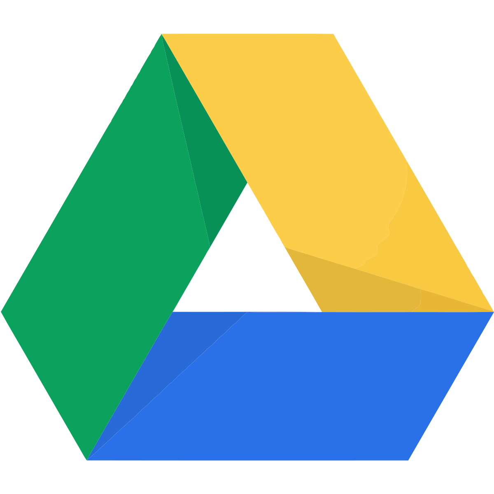
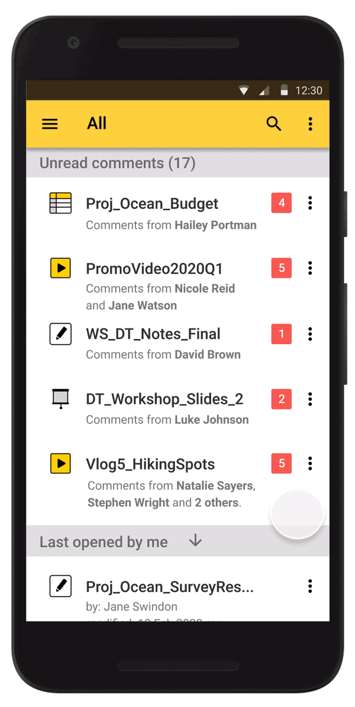

Tangram
 landing page
web prototype
mobile prototype
landing page
web prototype
mobile prototype
Tangram is a cloud storage that facilitates creative expression and promotes effective collaboration.
My roles |
Deliverables |
Methods/ Tools |
|---|---|---|
|
UX research |
|
|
|
UX/UI design |
|
|
|
Visual design |
|
|
|
Market research |
|
|
|
Branding |
|
|
Problems
|
A |
It takes a long time to transfer large files. |
|---|---|
|
B |
Not enough free storage. |
|
C |
Most of the cloud drives do not provide video-editing tools. |
|
D |
On the dashboard, users can neither read all the new comments in one go nor customize the organization of files. |
| Concern |
Files stored online are not secure. |
Solutions


(Click on the slide to see the next solution.)
User research
1. Survey
To understand how users and non-users think about cloud storage products, I conducted a survey over 41 people across different countries and age groups.
Frequency of Using Cloud Storage
87.5% of the respondents use cloud storage at least a few times a week. Among them, 60% of them use cloud storage daily.
The main purposes of using cloud storage are:
| 92.7% |
store files |
| 85.4% |
transfer files |
| 53.7% |
real-time collaboration |
Users are primarily concerned about what counts towards storage space, and how fast and easy it is to transfer files.
I also looked at what users like and dislike about their cloud storages.
Appreciation
Most Appreciated Features
Frustration 
Most Frustrating Issues
Concerns 
Among the respondents, one of them did not use cloud storage. The main concern of the non-user is data leakage. It is worried that sensitive information will be leaked onto the Internet.
Takeaways
-
Users are mainly concerned about privacy and security issues.
-
Some people prefer using USB to cloud drive when transferring sensitive files or large files.
Potential Trends
In the survey, I also looked at what other functions people want to have in their cloud storage. Many of them mentioned “video-editing tools”, “saving videos”, and “video conference”.
2. User Stories
Based on the survey results, I drafted the following user stories.
|
High |
Store and retrieve files anywhere and anytime. |
|---|---|
|
High |
Transfer and edit files from any devices (e.g.mobile, laptop and desktop) by anyone with permission. |
|
High |
To have added security for sensitive files. |
|
High |
To have a video-editing tool alongside other common tools (e.g. word-processing, slides, spreadsheet). |
|
Medium |
To have the option to customize the organization of files (e.g. by name, by last modified) |
3. Personas


(Click on the slide to see the next profile.)
Competitive Analysis
1. Cloud Storages
The survey shows that 90% of respondents use Google Drive and 65% of respondents use Dropbox. Here is a table that compares the two cloud storages.
|
Free account |
 | |
|---|---|---|
|
Storage |
15GB | 2GB |
|
Real-time collaboration |
 |
|
|
Customizable organization |
 |
|
|
Video-editing tool |
||
|
Private folders |
*On Dropbox, users can organize files by "last modified" or "name".
Takeaways
-
Our product can stand out by incorporating a video-editing tool.
-
We should maintain real-time collaboration for all our products.
-
We should provide better security for storing sensitive information.
One example of real-time collaboration is the ability to check unread comments and to respond to them immediately. Let's look at how users check unread comments on Google Drive.
Open from email:

Open from dashboard:

Opening unread comments from email is fast and direct. However, notification emails of unread comments can push important emails down.
Attempting the second route (i.e. opening from dashboard) is not ideal. The process contains many steps which can be time-consuming.
One way to improve the experience is to show all unread comments at the top of the dashboard so that users can immediately view all of them in one go. I will demonstrate that in my mockup.
2. Online Video-editing Tools
One of the problems my product aims to solve is the lack of a cloud-based video-editing tool incorporated in the cloud drive alongside other tools. To understand this market, I compared two popular online video-editing platforms:
| We Video | Clip Champ |
 |
 |
|
Pros:
|
Pros:
|
|
Cons:
|
Cons:
|
(To conduct a fair comparison, I focused on the free account of the two service providers).
Takeaways
While these options can provide a decent video-editing experience (and even unlimited exports), they require users to store the videos somewhere online or offline. Also, users cannot jot notes or add comments to the videos by time stamps.
Taking these factors into consideration, I created a bunch of sketches and wireframes.
Sketches & Wireframes
Sketches
Wireframes

User Testing of Wireframes
In the test, I asked participants to describe what they thought the pages were about and to navigating to different pages.
Here is what surprised me:
Labels may not be helpful
There was an option in the wireframe where users can categorize files by patterns. While this method is more accessible than color tags, it can be confusing in some situations:
|

|
Systematic but cluttered
While organizing content into various labelled groups is systematic, the overall layout looks cluttered.
Here is what I've learned:
Attempt to show everything is to show nothing
My initial attempt to show all recent items was to speed up the file-location process. But when everything is on the dashboard and is calling for your attention, it is hard to locate a particular file.

I learned to show the frequently opened files on the dashboard only instead of all the recently opened ones.
Mockups
After revising the wireframes, I created mockups of the product. Here are some of the pages:
User Testing of Mockups
In the test, I asked participants to comment on the visual aspect of the pages and to test the functional aspect of the product.
Here is what surprised me:
|
Content V.S. Construct: While the layout is clear in general, the most noticeable element is the set of lines. I learned that under certain contexts, using lines as a separator can make the layout look archaic. Instead, I learned to use contrasting colors and shapes to highlight certain sections. |

|
Color combinations:
Color combinations that blend well in the nature do not always translate to the same effect on screen.

Here is what I've learned:
|
Web design V.S. Poster design While the landing page looks neat and have buttons, it looks more like a poster than a clickable product. I learned that it is crucial to have visual cues that can guide users to click on interactive elements and to explore the page. |
Brand story
Before I reveal the final design, let’s look at the branding of this product.
To highlight the diverse tools available on this cloud platform, I chose the name ‘Tangram’. A tangram is a puzzle with 7 pieces which you can mix and match to create different objects.
Photo credit: Amazon
Similar to a Tangram puzzle, our cloud storage platform aims to provide different tools for users to achieve different project goals.
In short, Tangram values:
-
creativity
-
logical organization
-
collaboration
Brand logo
Among the sketches, I chose the one with an abstract "T" shape surrounded by a circle. The "T" shape is composed of four tangram pieces. The design is meant to reinforce the idea of collaboration and creativity.
Color
|
As shown in the logo, the brand colors are yellow and orange. In the user survey, those who frequently use cloud storages are between 20 and 40 years old. The chosen set of warm colors can provoke friendliness and acceptance to new ideas, which is generally welcomed by the target group. |

|
Typography
|
I chose “Futura” as the brand’s typeface. Its geometric presentation is neat and modern. Also, a rounder typeface can suggest friendliness. I chose “Roboto” as the complementary typeface as it is highly legible across large and small prints. |
Interactive Prototype
Based on the respondents’ feedback, I revised the design and created the following prototypes:
1. Landing Page

|
I enlarged the caption in the hero image to draw the user’s attention to the brand. |
I also added a carousel at the top of the page to display the product’s features:

Deep down, we know that not every user has time to read through the entire page. The carousel is used for showcasing the unique features of this cloud storage in one go, which can save the user’s time.
The post-it notes serve to pique the users’ curiosity to explore the next feature. By clicking on the post-it notes (or the arrows on the side), the user will see the hero image morphing into the next one. This animation adds a little reward to every click.
2. Dashboard

|
 |
The main changes were in the layout and the use of colors. Without the borders, the product appears more lively. I also applied a bright red to highlight the number of unread comments.
3. Video-editing Page

|
This platform provides basic functions for editing and exporting video clips. Users can jot notes or add comments to the video precisely by timestamps:
This makes collaboration easier.
4. Other pages
To learn more, click on the prototypes below:
landing page web prototype mobile prototypeReflection
Despite the growing number of products that provide data storage online (e.g. Instagram, Slack, etc.), rarely do they market themselves as cloud storages. Providing cloud storage, perhaps, has become an expected function for new web-based products or apps.
To make my product stand out, I added new features such as video-editing and more effective ways to customize files organization. But to remain relevant in the market, there is still much to learn.
If I had more time
I would incorporate a checkbox and a search bar above each column on the dashboard. This can allow users to do a quick search for particular files in order to mass edit them (e.g. to share or to delete them).
I would also add a dark mode to my cloud storage. This can soothe the eyes of users who prefer to (or have to) work in darker environment.